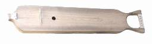
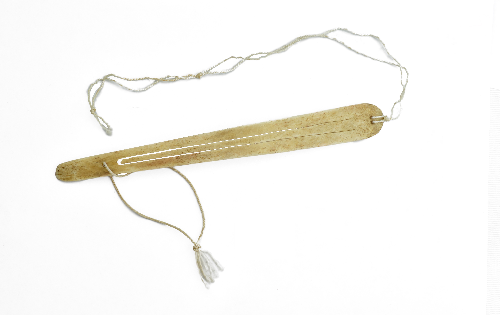

Лирические песни — импровизации на разные темы: любовные высказывания, колыбельные, напевы, отражающие весёлое настроение. Исполнители создают «личную мелодию», но в рамках стилистических норм своей локальной традиции.
Эпическая музыка — представлена краткими напевами в сказках и мифах (у северных хантов) или развёрнутыми героическими песнями. Это наиболее канонизированная область хантыйской музыки
Шаманская музыка — определяется специализацией шаманов (лекарь, предсказатель, жрец, хранитель капища и др.). Исполнение сопровождалось игрой на бубне. Несмотря на импровизационную природу, шаманская музыка была строго каноничной: шаман не сочинял собственные песни, а передавал «напевы духов».
Одна из песен:
Инструменты
Нарс-юх (санквылтап) — струнный щипковый инструмент, в переводе с языка ханты — «играющее дерево». Корпус напоминает лодку, на корпусе вырезан крест — резонаторное отверстие. Три, а чаще пять струн изготовлены из сухожилий либо оленьих кишок.

Тумран — хантыйский губной язычковый инструмент из кости. Состоит из тонкой костяной пластинки, в которой сделана прорезь, образующая язычок.

Тор-сапль-юх — щипковый инструмент типа арфа, состоит из резонансного корпуса-ящика, напоминающего по форме лодку, и высокого изогнутого грифа, завершающегося изображением головы коня. Играли на этом инструменте только мужчины, исполняя традиционные героические или торжественные песни.